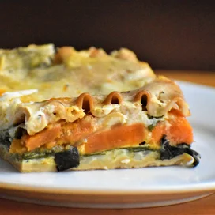

Butternut Squash Lasagna

Lasagna, with its delicious layers, can take a while to put together. but it's always worth it! This warm vegetarian version is a comfy any day of the week.
- 1/2 cup all-purpose flour
- 1 tablespoon ground paprika, or more to taste
- salt and ground black pepper to taste
- 2 pounds cubed beef stew meat
- 2 tablespoons extra-virgin olive oil
- 4 cups beef broth
- 2 large potatoes, cubed
- 1 (8 ounce) package mushrooms, quartered
- 3 medium carrots, sliced, or more to taste
- 1 medium onion, chopped
- 1 stalk celery, chopped
- 1 1/2 tablespoons Worcestershire sauce
- 2 cloves garlic, minced
- 2 bay leaves
Directions
- Step 1: Stir flour, paprika, salt, and pepper together in a medium bowl. Add beef and toss until coated with flour mixture.
- Step 2: Heat oil in a cast iron Dutch oven or large pot over medium-high heat. Add beef and sear until well browned, 2 to 3 minutes per side. Stir in broth, potatoes, mushrooms, carrots, onion, celery, Worcestershire sauce, garlic, and bay leaves and cover.
- Step 3: Reduce heat to low, and simmer, stirring occasionally, until meat and vegetables are tender, about 2 1/2 hours.